Мій шлях....
Пам'ятаю, що найпершим звуковідтворювальним пристроєм у сім'ї була лампова радіола. Моделі, на жаль, не пам'ятаю, тому що це було раннє дитинство.
Але по пам'яті дуже схожа на ту, що зображена на фото нижче. Пам'ятаю, що в ранньому дитинстві частенько крутив їй ручки, намагаючись зловити радіостанції.
Куди вона з часом поділася - чи викинули, чи комусь віддали. Вже не згадати...

В наши дни бороздя просторы Интернета и пытаясь узнать модель радиолы я оказался на очень интересном
сайте под названием "Виртуальный музей и справочник "Отечественная Радиотехника ХХ
Века" –
http://www.rw6ase.narod.ru/.
Сайт представляет собой виртуальный музей и справочник по радиотелевизионной аппаратуре, приборам
и комплектующим, разработанным и произведённым отечественной радиопромышленностью (в СССР или странах
СНГ) в ХХ веке, с 1924 по 2000 годы.
Создатель сайта – Харченко Валерий Григорьевич. Согласно информации, имеющейся на этом сайте,
как оказалось,
что это радиола – "ВЭФ–Рапсодия", ссылка на описание –
http://www.rw6ase.narod.ru/00/rl_l_/wef_rapsodija.html.
В дальнейшем я буду также ссылаться на сайт – http://www.rw6ase.narod.ru/
для более детальнго ознакомления с характеристиками аудиотехники.
Во второй половине 80–ых, когда я уже учился в начальных классах, у нас в семье появился
первый магнитофон. Назывался он "Карпаты– 205–1".Более подробно о нем можно
узнать здесь –
http://www.rw6ase.narod.ru/00/mg_kp/karpany205_1.html
Магнитофон выглядел точно также, как на представленном ниже фото.

Много кассет на нем было переслушано...Особенно в то время был популярны песни Владимира Высоцкого.
Забегая немного
наперед скажу, что на данный момент я собрал коллекцию пластинок в том числе и пластинки с записями
Владимира Высоцкого.
Естественно качество воспроизведения этого магнитофона оставляло желать лучшего. Но, как говорится, я
был и этому рад.
Как–то мы с семьей пошли в гости к родственникам. У них впервые я увидел стационарный касетный
магнитофон
"Маяк" с колонками и целый вечер просидел у него слушая различные кассеты. По
сравнению с моим переносным магнитофоном
это было "небо и земля". После того я долго просил родителей купить мне такой магнитофон, но
постоянно получал отказы.
Родителей просто–напросто не интересовала музыка. :–(
Решил сам накопить денег. Но ввиду различный обстоятельств так и неполучалось накопить необходимую
сумму денег.
После покупки родителями автомобиля со временем переносной магнитофон перкочевал в машину. Некоторе
время дома вообще
не на чем было слушать музыку.
Когда я учился в 8–ом классе, моему младшему брату посчастливилось побывать в гостях в одной
французской семье во Франции.
Перед его отъездом домой французы накупили ему много различных вещей и подарков. В частности два
аудио–плеера
марки "SABA". Позже я узнал, что "SABA" – это известная
торговая марка в Германии и не только.
Вот здесь есть краткая информация об этой торговой марке(на английском) –
https://www.mysaba.eu/en/the-brand/history
Поде ее брендом выпускалась много различной аудиотехники. Некоторое время слушал музыку на плеере в
наушниках.
В этом тоже есть свои плюсы – никому не мешаешь и полностью погружаешься в музыку.
Вместе с плеерами брат привез еще некоторое количество аудиокассет с записями и новых в упаковке.
Мне тогда запомнилось, что качество звука на зарубежных кассетах было заметно лучше, чем на
отечественных.
До сих пор у меня сохранились кассеты фирмы "BASF" с различными записями.
Периодически, когда
у меня появляется ностальгическое настроение, слушаю свои старые кассеты.
К моему сожалению, плееров "SABA" до настоящего времени не сохранилось – выбросил по
причине выхода из строя.
Обучаясь в старших классах и институте, в свободное от учебы время частенько зависал у своего друга.
У него дома была приличная по тем временам система:
– магнитофон "Электроника МП–204С", cсылка на его описание :
http://www.rw6ase.narod.ru/00/mg_ks/elektronika204st.html
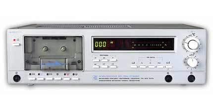
– усилитель "Амфитон У–002–стерео", Ссылка на его описание:
http://www.rw6ase.narod.ru/00/us_b/amfiton_u002s.html
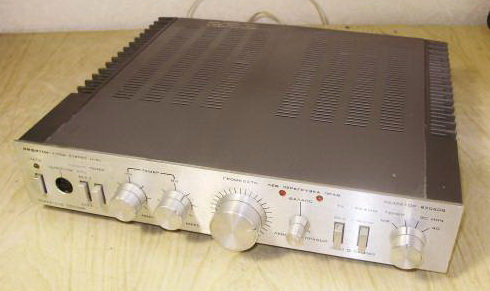
– акустика "Амфитон 25АС–027", cсылка на описание:
http://www.rw6ase.narod.ru/00/as/25as027.html
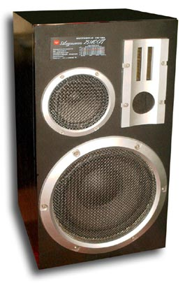
Слушать музыку на такой системе было одно удовольствие. Слушали по тем временам популярные
рок–группы:
"Наутилиус–Помпилиус", "ДДТ", "Чайф", "Агата Кристи". Из
зарубежного: "Scorpions", "Queen",
“Led Zepellin”, а также и другую музыку. А когда его родителей не было дома – мы устраивали
дискотеки по популярную музыку тех времен в стиле "техно" . Зачастую, из–за
жалоб соседей,
моему другу перепадало от родителей за эти дискотеки. P.S. Не так давно эти колонки перекочевали ко
мне ).
Учась в институте во второй половине 90–х гг. начал уже сам понемногу подрабатывать.
Подсобрал денежек и купил себе стационарный магнитофон "Полтава–210С" со
встроенным усилителем 2 х 10 Вт.
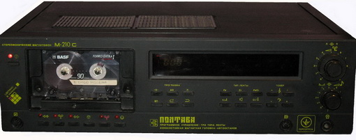
Этот магнитофон очень похож на магнитофон – приставку "Электроника МП–204С", но
в отличие от нее в
нем уже есть встроенный усилитель. Как выяснилось , усилитель в этом магнитофоне довольно
посредственный,
но все же я не которое время его использовал. Как говориться: "И рак на безрыбье –
рыба".
К этому магнитофону мой дядя подарил доработанные им колонки "10МАС–1М" –
http://www.rw6ase.narod.ru/00/as/10mas1.html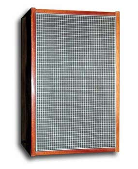.
В этих колонках были заменены вч–динамики, модель их не помню и установлены фазоинверторы. Также
эти колонки были изнутри обклеены войлоком.
Кстати, он сам в молодости увлекался музыкой. У него был комплект из проигрывателя пластинок(модели не
помню), усилителя
"Амфитон У–002–стерео" и колонок "10МАС–1М".
Колонки, как вы уже знаете, были мне подарены.
Пару лет на этой системе я слушал музыку. Как оказалось, качество сборки магнитофона было не на
высоте.
В нем очень часто что–нибудь ломалось и его приходилось ремонтировать. Ну это и понятно –
середина 90–х. Вся промышленность
в стране рушилась, работникам не платили зарплату. Часто рабочим зарплату выдавали товаром. Этот
магнитофон мною был
куплен с рук рабочего завода, который вместо денег зарплату получал товаром. Естественно, как
платили – так и делали технику. Заметно, что после развала Советского Союза качество сборки
радиотехники
резко упало. Не было и месяца, чтобы я в своем магнитофоне, что–то не ремонтировал.
Но зато поднатаскался в ремонте электроники. Качество встроенного в магнитофон усилителя было не ахти.
Мало того, что он был маломощный и звук он усиливал посредственно, так в него проникали наводки и
помехи с
остальных схем магнитофона. И самое главное – это резкий хлопок в колонках при выключении магнитофона.
Что не могла
не раздражать:–(.
Магнитофон сохранился у меня в рабочем состоянии и до теперешнего времени. Сделал ему недавно
профилактику.
Сейчас периодически включаю и слушаю под настроение свои старые кассеты. Конечно звучание кассет
проигрывает
по качеству звучанию CD. Но все же, иногда приятно посидеть и послушать музыку под ностальгическое
настроение:–).
На первое время мне хватало и встроенного усилителя в магнитофон. Но время не стоит на месте и
всегда хочется чего–то большего. Тем более подвернулась мне возможность послушать и купить
усилитель "Радиотехника У–101–Стерео" –
http://www.rw6ase.narod.ru/00/us_b/radiotehnika_u101.html
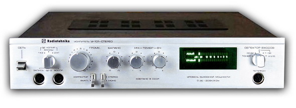.
После первых минут прослушивания музыки через этот усилитель – разницу в звуке по сравнению со
встроенным усилителем
в магнитофон оказалась на лицо. Мною было принято незамедлительное решение его приобрести. Тем боле,
что мне его
предложили купить в кредит. Я за него рассчитался спустя пару месяцев.
Конечно, звук преобразился в лучшую сторону. Не скажу, что кардинально улучшился, но стал мощнее и
шире диапазон
частототный диапазон. Особенно это стало заметно, когда был приобретен в кредит компьютер и я начал
слушать музыку
с компьютера в формате СД и МР3. Хотя в моем первом компьютере была довольно посредственная звуковая
карта,
которая заметно шумела. Тогда я еще не знал и не представлял себе, что такое: "звуковая
сцена", "глубина сцены", "детальность".
Понимание этого у меня наступит немного позже. Этот период я для себя условно назвал
"Наращиванием мускулов" –
от малой мощности звука к большой.
В 2000 г. я закончил университет и устроился на работу в IT–отдел одного из коммерческих банков.
Начал зарабатывать собственные деньги. Хотя поначалу зарплата была небольшая и практически вся уходила
на погашение кредита за компьютер.
Год спустя я почувствовал себя по деньгам себя более–менее свободно. Решил купить себе более
мощные
колонки. Так как уже моих "10МАС–1М" уже не хватало и усилитель
"Радиотехника У–101–Стерео"
выжимал из них все. Колонки стали узким звеном. Мне хотелось купить большие напольные колонки.
Мы другом пересмотрели множество вариантов. Долго выбырая, остановились на колонках –
"Амфитон– 50АС–022" –
http://www.rw6ase.narod.ru/00/as/50as022.html.
http://www.rw6ase.narod.ru/00/as/50as022.html
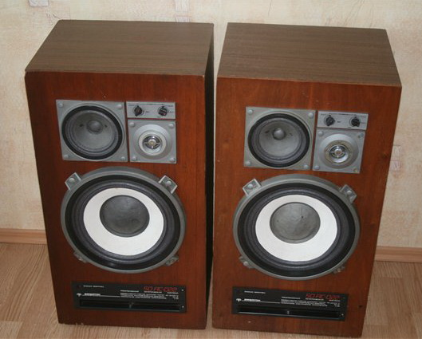
Одновременно с покупкой акустики "Амфитон– 50АС–022" приобрел себе в
компьютер звуковую карту "Creative SB Live 5.1".
Звучание системы, после такого апгрейда, улучшилось на порядок. Поначалу, я был доволен как слон
:–). Но, со временем,
прислушиваясь к звуку из колонок, я заметил, что звучание одной колонки в верхней области частот
отличается от другой.
Внимательно присмотревшись к высокочастотным динамикам, я увидел, что они разные. Естественно и по
разному звучат.
Благо, на акустике есть регуляторы уровня высоких и средних частот. Пришлось с ними поиграться, чтобы,
более–менее
выровнять на слух звучание. Впервые в своей практике я столкнулся с недобросовестным продавцом,
умолчавшим об этом.
В то время, у меня не было большого опыта прослушки и покупки акустики. Поэтому я и не заметил разницы
в звучании колонок
при покупке.
Решил найти и поставить родной высокочастотный динамик. Но пока занимался поисками, начал замечать
следующую
вещь – разрушение подвесов динамиков. Увидев это, я решил с колонками пока ничего не делать и пока
слушать как есть.
В начале 2000–х годов активно начала развиваться мультимедийная акустика. И я решил использовать
ее. То, что это было
не совсем правильным путем, я тогда еще не понимал. В то время HI–FI – аудиотехнка
для меня не была доступна по цене,
так как я уже жил отдельно от родителей и выплачивал кредит за квартиру.
Мультимедийный период
Ранее, я упоминал, что использование мультимедийной акустики было не совсем правильным выбором в плане
движения в направлении хорошего звука, но осознание этого пришло значительно позже. Все–таки
постараюсь
описать свои мытарства с мультимедийной акустикой. Может мой опыт пригодится другим, чтобы не
повторялись
мои ошибки, а также не терялось время в поисках своего звука.
Начнем по–порядку.
Тогда я еще не знал, что развалившиеся подвесы динамиков можно заменить и динамики восстановить. Я
решил, что
моей акустике "Амфитон– 50АС–022" пришел конец. Да еще и усилитель
"Радиотехника У–101–Стерео"
не устраивал меня своим шипением и шуршанием регуляторов. За скромную плату "Амфитон–
50АС–022" вместе
с усилителем "Радиотехника У–101–Стерео" перекочевали к другу на дачу.
Много работая и продвигаясь по служебной лестнице у меня было совсем мало свободного времени.
В свободное от работы время я в основном занимался ремонтом квартиры, а вечерами просиживал за
компьютером.
В итоге, я запустил свое увлечение аудиотехникой и электроникой. Фактически мое развитие в этом
направлении остановилось:–(.
А так как много времени я проводил на работе, а дома за компьютером, мне показалось логичным слушать
музыку на компактной
активной акустике, которая без проблем помещалась на рабочем столе. Недолго думая, я занялся поиском
подходящей мультимедийной
акустики. В первую очередь, меня привлекало в ней – компактность, красивый внешний вид и
довольно мощное звучание,
несмотря на небольшие габариты.
Не считая пластмассовых маломощных колонок, более–менее моим первым серьезным приобретением была
мультимедийная
акустика "Microlab A6201" – http://www.ixbt.com/multimedia/microlab-a6201.shtml
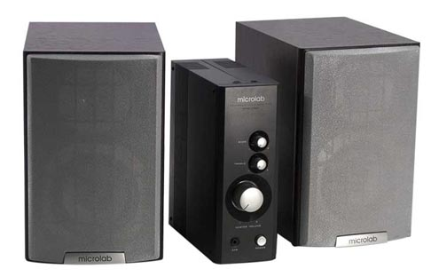.
Поначалу акустикой был доволен как слон. Компактный и красивый внешний вид. Ничего не хрипит, не
трещит,
аккуратно смотрятся. И звук вроде ничего. Усилитель выполнен отдельным блоком. Имеется выход на
наушники.
Но со временем захотелось чего–то более мощного и лучшего. Так как в этой акустике мне не
хватало запаса
по мощности – было решено искать ей замену.
Присмотрелся я колонкам "Sven BF–31" – http://sven.ua/ru/products/detail.php?SECTION_ID=770&ID=370
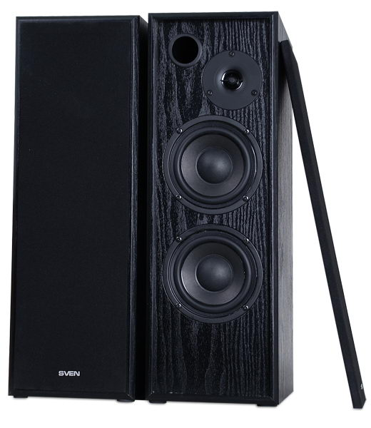.
По мощности они выигрывали у "Microlab A6201". Все–таки в "Sven
BF–31" установлены по два сч– нч– динамика
в каждой колонке. Да и корпус у них пообльше. Поначалу они мне даже нравились. Но по сравнению с
"Microlab A6201" вокал у них звучал как–то приглушенно, из–за чего
приходилось эквалайзер звуковой
карты настраивать. Кстати, в этот период времени обзавелся звуковой картой "Creative Audigy
2".
В итоге, как выяснилось, что звучание этих колонок более заточено под клубную музыку, с преобладанием
высоких
и низких частот, а средние частоты звучали как–то приглушенно.
В итоге, я их подарил своему младшему брату на его День Рождения. До сих пор они у него успешно
трудятся.
Выбирая замену "Microlab A6201". и "Sven BF–31", мой взор
опять упал на акустику компании "Microlab".
Приглянулась мне акустика "Microlab Pro 1" – https://www.ixbt.com/multimedia/microlab-pro1.shtml

По звучанию она была однозначно лучше "Sven BF–31". Также большим плюсом было
наличие пульта ДУ и выполнение
блока усилителя в отдельном корпусе. Более года она меня радовала своим звуком. Я даже начал
потихоньку
создавать свою коллекцию музыки на AUDIO–CD. Так как разница в звучании музыки в формате
MP3 и CD–AUDIO
уже была различима на слух. Особенно плохо звучали MP3–файлы с низким битрейтом и низким
качеством записи.
Потихоньку плохо звучащие файлы в формате MP3 я просто удалял с жесткого диска компьютера.
На тот момент времени эта акустика мне казалась очень хорошо звучащей. Я еще тогда не понимал разницы
в звучании усилителей собранных на микросхемах, транзисторах и лампах. А в акустике не понимал, что
такое
звуковая сцена, тональный баланс и то, что фирменная акустика на дорогих динамиках с хорошими
разделительными
фильтрами звучит лучше и натуральней, чем китайские недорогие колонки на неизвестных динамиках с
неизвестными
характеристиками.
Частенько посещая различные сайты и форумы, я стал частым гостем конференции сайта IXBT – http://forum.ixbt.com/.
Наиболее часто читаемым мною была ветка "Цифровой звук". В этой ветке очень много
различных тем по выбору
активной акустики, звуковых карт, наушников, ресиверов и т.п. Поэтому могу рекомендовать эту тему
конференции для начинающих меломанов,
которые слушают музыку через компьютер и пока не могут позволить себе купить полноценную Hi–Fi
систему.
Благодаря этой конференции мне захотелось улучшить звучание своей системы. На форуме очень часто
обсуждалась акустика
"Microlab Solo 6" – https://www.ixbt.com/multimedia/microlab-solo6c.shtml
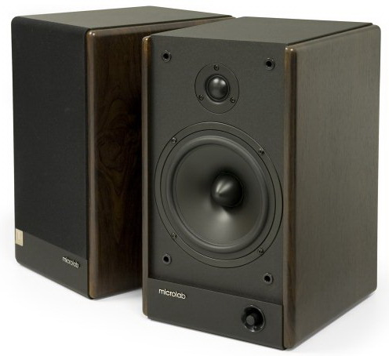.
Одним из ее плюсов было то, что усилительный каскад выполнен не на микросхемах, а на дискретных
элементах.
Якобы благодаря этому звучание становиться максимально приближенным к звучанию
Hi–Fi–систем. Мне удалось
на время взять послушать эту акустику и сравнить ее с своей мультимедийной акустикой "Microlab
Pro 1".
Как говорится: "Лучшее – враг хорошего" –). В результате сравнения оказалось,
что акустика "Microlab Solo 6"
лучше звучит и имеет более глубокий и более четкий бас. В общем, она мне понравилась и я решил ее
приобрести
сразу же после продажи своей системы "Microlab Pro 1". Хочу обратить внимание, что
есть еще и активная акустика
"Microlab Solo 7". Она отличается от "Microlab Solo 6" тем, что
имеет два СЧ–НЧ динамика и естественно у нее
больше размер. И по идее должна лучше звучать. Но я ее себе решил не приобретать, так как для
настольной
омпьютерной акустики она великовата, а для напольной маловата. Чтобы использовать ее как напольную
акустику
еобходимо еще и подставки покупать или изготавливать.
Спустя немного времени я стал счастливым обладателем акустики "Microlab Solo 6С". Как
оказалось она отличается от
"Microlab Solo 6" тем, что имеет в наличии пульт дистанционного управления. Что для
меня являлось очень удобным.
Хотя со временем я понял, прочитав до конца ветку про "Microlab Solo 6", что введение
дополнительных электронных
цепей в тракт усилителя добавляет в звук различные искажения и шумы.
На этом можно было бы заканчивать эксперименты с мультимедийной акустикой, но как выяснилось, что у
"Microlab Solo 6" есть слабые стороны. И их не мало. Читая различные статьи в
Интернете, посещая
различные форумы на тему звука и музыки я нашел интересные статьи на сайте – http://forums.overclockers.ru
на тему "Акустика Microlab SOLO 6C. Субъективный взгляд" автором которых является
пользователь форума с
ником "zauropod" – http://forums.overclockers.ru/viewtopic.php?f=25&t=237656.
После прочтения статей я понял, что акустика "Microlab Solo 6" далека от идеала.
Хотя на мой слух она вроде бы звучала даже хорошо. Из серьезных недостатков, выявленных мною,
было – гудение баса на определенной частоте, проваленная середина, тонкие стенки корпуса колонок,
отсутствие звукопоглотителя внутри колонок.
Прочитав эти статьи, мне удалось расширить свои познания в области акустики. Что является немаловажным
в
продвижении по миру "Аудио". Ведь получение новых знаний и умений – это плюс к
жизненному опыту –)
Мне даже самому захотелось как–то улучшить звучание своих "Microlab Solo 6".
Я задумывался над тем, чтобы вынести усилитель из колонки в отдельный корпус. Сами колонки укрепить
перемычками
для большей жесткости, обклеить внутри звукопоглотителем и т.п. Но из–за нехватки свободного
времени решил
доработками не заниматься. Так как потраченное время и средства на доработку могут себя не оправдать.
Я все больше склонялся к тому, что лучше немного подкопить денег и купить комплект
"Hi–Fi системы" начального уровня,
состоящий из раздельных компонентов: интегрального усилителя и акустики. Использование раздельных
компонентов позволит
поэтапно проводить обновление системы.
Свою первую "Hi–Fi систему" начального уровня и сложности выбора я опишу в
следующей главе.
А эту главу я хотел бы закончить тем, что взял себе на прослушку приглянувшуюся мне мультимедийную
систему
"Jetbalance JB–391". В процессе прослушивания и сравнения с акустикой
"Microlab Solo 6" мой выбор сделан был в
пользу "Jetbalance JB–391".
На сайте http://www.ixbt.com/ есть статья с более подробным
описанием –
http://www.ixbt.com/multimedia/jb-391.shtml
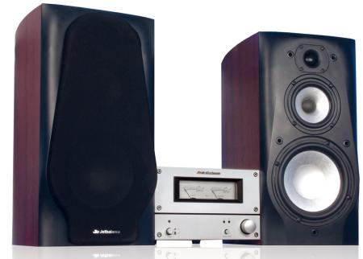.
Эта мультимедийная акустика мне больше понравилась по сравнению с "Microlab Solo 6"
по нескольким критериям.
Во–первых – это раздельная конструкция колонок и усилителя. Усилитель выполнен в отдельном
корпусе со стрелочными индикаторами,
что довольно красиво смотрится. Также такая конструкция позволяет, при желании, менять компоненты.
Например,
со временем я заменил усилитель на более дорогой. Во–вторых, колонки трехполосные, в сравнении с
"Microlab Solo 6"
звучание в области средних частот более открытое. Середина на "Microlab Solo 6"
звучит как–то глуховато. В– третьих,
колонки довольно тяжелые, раза в два тяжелей за "Microlab Solo 6". Что, кстати,
немаловажно – будет меньше гудения
и призвуков. В – четвертых, бас звучит на "Jetbalance JB–391" более четче
и собранней чем, на "Microlab Solo 6",
но он менее глубокий. Зато такого гудения, какое проявляется в "Microlab Solo 6" и в
помине нет.
Подводя итог прослушивания и тестирования, я решил купить себе "Jetbalance
JB–391", а "Microlab Solo 6" – продать.
Так как эта акустика была очень популярна в то время и на нее еще сохранялась гарантия, продал я ее
без проблем
и даже практически за туже цену, что и покупал–).
Приобретение акустики "Jetbalance JB–391" было моим "дембельским
аккордом" в мультимедийной акустике.
В дальнейшем я твердо решил больше не экспериментировать с мультимедийной акустикой, а потихоньку
копить денежки и переходить на Hi–Fi.
Мой путь в мир Hi–Fi...
Поэкспериментировав некоторое время с мультимедийной акустикой, я решил постепенно перейти к
"Hi–Fi" ситемам.
На данный момент рабочее место возле компьютера озвучивала мультимедийная акустика "Jetbalance
JB–391".
Мне захотелось озвучить еще и гостиную. В гостиную я планировал приобрести напольную акустику, так как
площадь ее была около 20 кв.м. На то время для озвучивания гостиной и просмотра фильмов я использовал
многоканальную мультимедийную систему "Microlab h500" – http://www.microlab.ua/index.php?produkt=91
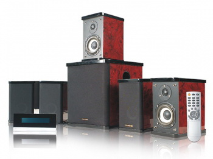
Чтобы долго не описывать плюсы и минусы этой многоканальной акустики, я отмечу только пару то, что для
озвучивания фильмов ее в целом хватало. Плюс еще и красивый внешний вид. А вот с музыкой было
несколько
хуже. Мне приходилось на звуковой карте компьютера крутить эквалайзер для получения более–менее
приемлемого
звука. Звучала она глуховато, на слух чувствовался провал в области средних частот.
Помню, кода у меня были еще колонки "Амфитон– 50АС–022" и усилитель
"Радиотехника У–101–Стерео" я
частенько слушал рок–группу "Ария".Особенно хорошо запомнилось на колонках
Амфитон звучание гитарных партий.
Звучали они очень ярко, даже иногда "мурашки" по коже пробегали –). На "Microlab
h500" – композиции "Арии"
звучали как–то суховато и приглушенно. Гитарные партии звучали совсем невнятно. Я решил
попробовать вместо
фронтальных сателлитов "Microlab h500" другую акустику. У меня тогда еще была в
наличии мультимедийная система
"Microlab Pro1". Я взял с нее колонки и подключил вместо штатных фронтальных
сателлитов "Microlab h500".
И сразу же услышал разницу в звучании. Звук "до" и "после" довольно
ощутимо различался в сторону улучшения.
Это и подтолкнуло меня к замене штатных сателлитов "Microlab h500".
Решение о замене сателлитов я принял накануне своего Дня Варенья в далеком 2009 году:–). Недолго
думая, я отправился
по супермаркетам электроники за поиcками подарка для себя :–). И в одном из них по
привлекательной цене – 80 у.е.увидел пассивную акустику "Sven 741F" –
http://sven.ua/ru/products/detail.php?ID=323  .
.
Попросил продавцов подключить. После подключения и прослушивания решил купить. Почему мой выбор пал
именно на эту
акустику? Отвечу – по нескольким причинам. Первая из них –это доступная цена. Акустика
других брендовых марок
стоила значительно дороже. Я не планировал поначалу вкладывать много денег в
"Hi–Fi". Так как уже начался кризис,
курс национальной валюты существенно упал по отношению к американскому доллару и евро.
Из–за этого уменьшилась покупательская способность многих граждан, в том числе и моя –(.
Вторя причина – я не был уверен в том, что меня затянет в мир "Hi–Fi" ,
как говорится, с "головой".
Поэтому решил для начала начать с акустики "Sven 741F".
Хотя многие меломаны и аудиофилы не поддержали бы меня в решении покупки акустики именно этой
китайской торговой марки.
Но это было мое решение и мой путь. Со временем, слушая различную брендовую не китайскую акустику, я
понял, что мои
"Sven 741F" не так уж плохи как считается. Показатель цена/качество у них довольно
неплохой. Для непривередливых
слушателей, каким я был в то время, они довольно даже ничего. Некоторое время я их использовал вместо
штатных фронтов
"Microlab h500"“.
Но, как выяснилось, в процессе использования акустики "Sven 741F" встроенный
усилитель в "Microlab h500"“ слабоват
по мощности и полной мере не раскрывал потенциал колонок. Также мною был замечен еще один неприятный
момент в активном сабвуфере
"Microlab h500"“. В усилителе мультимедийной системы было неудачно сделано
микширование низких частот с фронтальных каналов.
Кроме баса с фронтов в канал сабвуфера попадали еще и часть среднечастотного диапазона. В результате
этого сабвуфер еще
и немного "подпевал" фронтальным каналам. Из–за чего нарушалась стереопанорама. В
общем, я решил систему "Microlab h500"“
использовать только для фильмов, а для "Sven 741F" приобрести отдельный усилитель.
После изучения различных объявлений на местной барахолке – я приобрел вот такой усилитель
"Вега 50У–122С" –
http://www.rw6ase.narod.ru/00/us_b/wega25u122.html
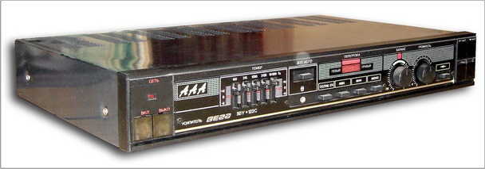.
Принеся его домой и включив его, я обнаружил, что не работает селектор входов и барахлит выход на
наушники.
Это была не совсем удачная покупка. В будущем,перед покупкой я уже более дотошно проверял технику,
особенно б/у. Но
как говорится "Не бывает худа без добра". Чуть позже, благодаря этому усилителю, я
опять вернулся к увлечению
элетроникой и получил дополнительные навыки в ремонте электроники.
Усилитель в целом был рабочий, но работал только один вход для источника сигнала. Подключить к
компьютеру я смог его без проблем.
Акустика "Sven 741F" в паре с ним зазвучала намного лучше, чем с "Microlab
h500". Хотя, на различных аудио– и радиофорумах
эту модель усилителя не особенно жалуют. Он был выпущен в 1994 году, когда качество изготовления
техники заметно упало.
В СССР еще как–то контролировалось качество изготовления бытовой продукции. Но после развала
СССР многие предприятия работали с трудом,
рабочим не выплачивали заработную плату. Зачастую заработную плату выдавали продукцией завода. Вот и
следствием этого стало ухудшение
качества выпускаемой продукции. В очередном отпуске я решил заняться ремонтом этого усилителя.
Все–таки интересно было довести его
до "ума". Запчасти удалось отыскать на него не сразу. Пришлось некоторое время
побегать по радиомагазинах, побывать на барахолке.
И даже за одной кнопкой, которая переключает звук на наушники, ездил на завод, который во времена СССР
выпускал продукцию для военных нужд.
В процессе ремонта усилителя активно черпал информацию с форумов следующих сайтов:
– http://datagor.ru/ – "У Датагора";
– http://www.klyachin.ru/ – "Лабаратория
"доктора" Клячина";
– http://www.vegalab.ru/ – "Вегалаб
"Немного звукотехнки"".
На этих сайтах и их форумах очень много интересной, полезной и практической информации. Каждый сможет
для себя может найти что–то полезное и нтерсеное
для себя. А также попробовать смастерить что–то своими руками или поделиться опытом.
После ремонта усилителя все узлы были работоспособны. Это добавило мне уверенности в своих силах и
явилось отдушиной в повседневной жизни:–).
Усилитель "Вега 50У–122С" я еще использовал где–то полгода с акустикой
"Sven 741F".
После приобретения другого усилителя этот усилитель перекочевал на рабочее место возле компьютера и
использовался с акустикой "Jetbalance JB–391" вместо штатного усилителя.
Штатный усилитель значительно проигрывал по звуку отечественному
"Вега 50У–122С". Он был слабее по мощности, в нем не было регуляторов тембра и
выхода на наушники.
Сейчас я стараюсь не крутить регуляторы тембра и слушать музыку в режиме "Direct" в
обход темброблока и различных улучшателей звука.
А на заре увлечения "Аудио" я еще многих вещей не знал и не понимал. В том числе то,
что блок регулировки тембра в усилителе вносит
дополнительные искажения в звук и изменяет окраску звучания.
С профильных сайтов по звуку я узнал, что чем короче путь прохождения сигнала от источника до
акустики, тем лучше.
А с точки зрения электроники – чем меньше дополнительных цепей и элементов, тем меньше потерь и
искажений звукового сигнала.
И еще много других вещей и понятий. Понимание всего этого ко мне пришло со временем, когда я начал
посещать не только форумы для радиолюбителей,
а и форумы для меломанов, аудиофилов и просто любителей музыки.
Периодически посещая наш местный радиорынок, я наткнулся на очень интересный усилитель советского
производства – "Барк–001–Стерео" 1986 года выпуска.
Не долго думая, решил его приобрести. С трудом смог его дотащить домой – все таки 15 кг. чистого веса.
Этот усилитель является практически
аналогом "Бриг–001–Стерео" –http://www.rw6ase.narod.ru/00/us_b/brig001.html
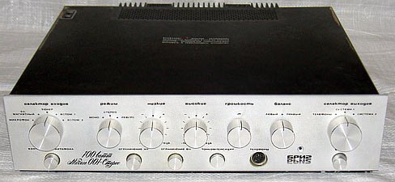
Главным разработчиком и конструктором усилителя "Бриг–001–стерео" был Лихницкий
Анатолий Маркович. Опытные образцы усилителя были выпущены на Ленинградском
объединении "Океанприбор" в 1975 году. В 1976 году был запущен в серийное производство на
Кировском заводе "Ладога". Выпускался усилитель вплоть до 1989 года.
До этого времени он претерпев несколько модернизаций схемы. С 1985 года на Новокаховском
приборостроительном заводе Сокол(Украина) начал выпускатся
"Барк–001–Стерео" –
очень схожий на "Бриг–001–Стерео".Особенный интерес представляют образцы
усилителя более ранних версий без микросхем в звуковом тракте и на 808 транзисторах.
Данный усилитель считался одним из лучших советских усилителей того времени. Он даже экспортировался
за границу.
Имея в наличии два усилителя "Вега 50У–122С" и
"Барк–001–Стерео" я периодически сравнивал их звучание. Впервые я услышал
своими ушами, что такое "звуковая сцена".
"Барк–001–Стерео"создавал "звуковую сцену" в отличие от
"Вега 50У–122С". Звук выходил как бы за пределы акустики. Также
"Барк–001–Стерео" звучал более мощно
и напористо в области низких частот. А верха звучали мягко. На тот момент моей акустике "Sven
741F" не хватало запаса мощности. Имея такой усилитель, я понял, что пора уже менять
акустику на более мощную и лучшую. Хотя, отмечу, что у "Барк–001–Стерео"
были свои недостатки – это гудящий трансформатор. Вечером, когда слушаешь музыку на небольшой
громкости,
его гудение раздражало.Чтобы уменьшить гудение я поставил между верхней крышкой и трансформатором
демпфирующую прокладку из резины. Крышка через прокладку прижимала корпус трансформатора
и он немного тише гудел. Также бичом всей советской аудиотехники были высохшие электролитические
конденсаторы. Пришлось в "Барк–001–Стерео" заменить все электролиты
кроемее больших по питанию.
Так как половина из них потеряла емкость, а в блоке питания нашелся один полностью дохлый
"электролит".
За время увлечения аудио я прочитал много интересных статей и постов о "виниловом звуке". В
этих статьях писалось, что "винил", то бишь пластинки, совсем звучат по другому, чем
CD–диски
и тем более МР3. Звучание записей на пластинках "аналоговое", с хорошим разделением каналов
и считается более натуральным, чем на CD. Свои мысли и ощущения о звучании "винила" я
постараюсь
описать в разделе "О звуке". А сейчас отмечу, что я тогда сильно загорелся приобретением
винилового проигрывателя. Моим первым проигрывателем стал "Ария 102–Стерео"
–
http://www.rw6ase.narod.ru/00/el_p/arija102.html 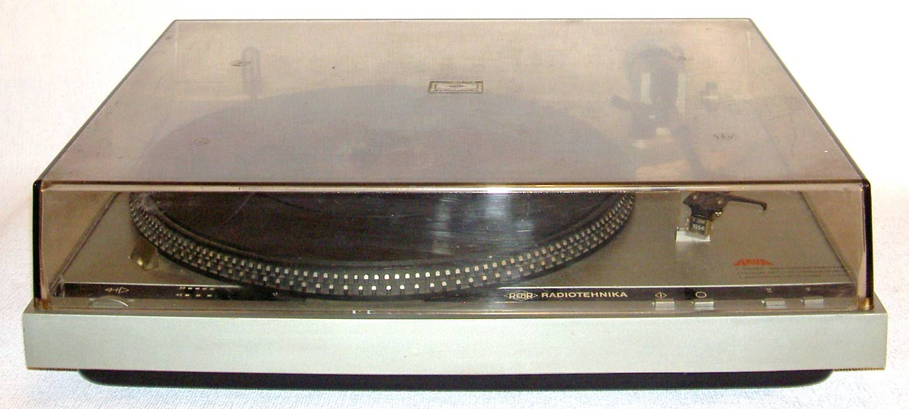 В придачу к нему получил
еще 20 пластинок.
"Ария 102 – Стерео" – проигрыватель пластинок 1–го класса, не самый лучший, но
очень доступный по цене. Вполне подходит для первого знакомства с миром "винилового" звука.
Так как со временем выяснилось, что увлечение "винилом" дело довольно таки затратное.
Слушая пластинки, я выяснил, что звучат они совсем не так как CD и тем более MP3. Конечно, качество
звука на пластинке зависит от многих факторов. Во–первых, оказалось,
что зарубежные пластинки лучше звучат, чем отечественные фирмы "Мелодия". Также влияет на
качество звучания "затасканность" и "запыленность" пластинки. Бережное отношение
и аккуратное использование продлевает жизнь пластинки. Зачастую старые советские проигрыватели в
прямом смысле слова пилили пластинки. Прослушанная несколько раз на таком проигрывателе
пластинка в дальнейшем становилась почти непригодная для дальнейшего прослушивания. Во–вторых,
качество записи на пластинке сильно зависело от исходного материала, из которого изготовлялась
матрица, которая затем применялась для изготовления пластинок. То есть если для изготовления матрицы
использовалась лицензионная мастер–лента с качественной записью и качественный пластик,
то и пластинки получались с хорошим звучанием. Но, зачастую, качество записи на советских пластинок
хромало. Но были и исключения. У меня в коллекции есть немало пластинок фирмы "Мелодия"
с хорошим звучанием. За время увлечения аудио я собрал в коллекцию более чем 300 пластинок.
Со временем заменил "Ария 102–Стерео" на более лучший проигрыватель нулевого
класса "Электроника ЭП–017–Стерео"–
http://www.rw6ase.narod.ru/00/el_p/elektronika_ep017.html
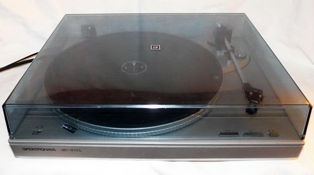
Этот проигрыватель считается довольно таки хорошим и даже даст фору зарубежным проигрывателям такого
же ценового диапазона. Звучание проигрывателя еще зависит и от того, какая головка установлена и
насколько изношена игла. Мне попался проигрыватель с головкой ГЗМ–103. И в запасе есть еще пара
головок "Корвет" ГЗМ–128.
Хочу отметить, что увлечение винилом дело затратное. Хорошие зарубежные пластинки стоят не дешево,
качественные зарубежные проигрыватели и головки к ним также стоят нормальных денег. Плюс еще нужен
очень качественный фонокорректор, желательно ламповый. В итоге набегает немаленькая сумма. Поэтому
пока я решил остановиться на данном проигрывателе и уже собранной коллекции пластинок.
Хочу отметить, что увлечение винилом дело затратное. Хорошие зарубежные пластинки стоят не дешево,
качественные зарубежные проигрыватели и головки к ним также стоят нормальных денег. Плюс еще нужен
очень качественный фонокорректор, желательно ламповый. В итоге набегает немаленькая сумма. Поэтому
пока я решил остановиться на данном проигрывателе и уже собранной коллекции пластинок.
После того, как у меня появился первый виниловый проигрыватель и пластинки я решил заменить свои
"Sven 741F"на более мощную акустику. Так, как слушая пластинки группы
"Ария" мне не хватало звучания
моих бывших колонок "Амфитон– 50АС–022". Как–то мне подвернулась
акустика "Амфитон 25АС–027". Такая же акустика была у моего друга и о ней я
писал выше. После прослушивания я решил ее приобрести.
Тем более, что предыдущий хозяин не много за нее просил:–). Сравнивая ее звучание с
"Sven 741F" хотел бы отметить, что в "Амфитон 25АС–027" больше
баса и "мясистости" в звучании. По басу "Sven 741F"
значительно уступили "Амфитон 25АС–027". Песни группы "Ария"
на "Амфитон 25АС–027" звучала совсем по другому с яркой серединой и басом. А
вот звучание в области высоких частот "Амфитон 25АС–027"
немного расстроило . Об этом напишу по подробней. В качестве ВЧ–звена в "Амфитон
25АС–027" применяется изодинамическая головка – 10ГИ–1. Как она устроена,
расписывать не буду – в интернете много
сайтов с ее описанием. Изодинамика считается лучше купольных ВЧ–головок по нескольким
характеристикам. Но есть один негативный момент – это узкая направленность ВЧ–диапазона. Что бы
полноценно
воспринимать звучание в области высоких частот необходимо правильно расположится перед акустикой, уши
непосредственно должны быть на одной линии с ВЧ–головками. Малейшее отклонение от правильного
расположения приводит к ослаблению слышимости ВЧ. Также ВЧ–частоты на изодинамике звучат немного
иначе. Сравнительно на слух я ощущал их нехватку. Также еще добавлю, что СЧ–головка 20ГДС,
установленная в "Амфитон 25АС–027" , звучит не ахти. И ее желательно заменить
на что–то лучше. После получаса прослушивания уже хотелось или выключить звук или сделать его
тише.
Поначалу, я думал доработать акустику, чтобы улучшить ее звучание. Но почитав различные статьи по
доработке я понял, что не всегда может получится результат лучше, чем до доработки.
Потом оставалось очень мало свободного времени для этого занятия. На доработку тогда я так и не
решился. И "Амфитон 25АС–027" со временем перекочевали к другому хозяину.
Тестируя акустику и усилители я совсем забыл написать о источниках звука. Источник звука также играет
немаловажную роль в построении аудиосистемы. Поначалу как источник звука я использовал компьютер
и звуковую карту "Creative Audigy 2". Как плеер я использовал "Winamp". Звучание
звуковой карты меня тогда устраивало, звучание композиций всегда можно было подкорректировать
встроенным в нее
эквалайзером. В основном слушал музыку в формате MP3, записей в формате Audio–CD у меня тогда
было немного. Скажу сразу, что разница в звучании Audio–CD и MP3 была заметна на слух даже на
мультимедийной акустике. После многих часов сидения в интернете на форумах и различных сайтах на
аудитематику я постепенно начал понимать, что нужно улучшать звуковой тракт и отказаться от
прослушивания MP3.
Первое, что я сделал это приобрел за 50.у.е. б\у звуковую карту "M–Audio Revolution
5.1". Про нее можно почитать вот здесь –
http://www.ixbt.com/multimedia/m-audio-revolution51.shtml
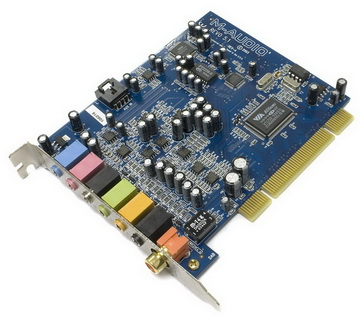.
Эта звуковая карта считается в своей ценовой категории хорошей покупкой для начинающего аудиофила.
Во–первых – в ней используется качественный ЦАП АКМ4358, во–вторых – есть отдельный
качественный
выход на наушники. Конечно, она не лишена недостатков, но для прослушивания музыки довольно таки
хороший выбор за скромную цену. Главное отличие от звуковых карт фирмы "Creative" есть то,
что "M–Audio Revolution 5.1" аппаратно поддерживает частоту дискретизации 44,1
кГц. В звуковых картах "Creative" используется программная передискретизация. Что в
свою очередь ведет к
появлению искажений в области высоких частот при воспроизведении музыкальных композиций записанных с
частотой дискретизации 44,1 кГц. Также дополнительным бонусом для владельцев
"M–Audio Revolution 5.1" является поддержка многоканального звука
Со временем в моем арсенале появилась еще одна интересная звуковая карта – "Terratec Aureon
7.1 Space". Вот ее описание – http://www.ixbt.com/proaudio/terratec–aureon71.shtml.
Предыдущий владелец перепрошил ее в – "Audiotrak ProDigy 7.1" –
http://www.ixbt.com/proaudio/audiotrak-prodigy71.shtml.
Хочу отметить, что это практически идентичны звуковые карты, за исключением цвета текстолита и
коаксиальных разъемов у "ProDigy 7.1" и оптических у "Aureon 7.1 Space".
Со временем в моем арсенале появилась еще одна интересная звуковая карта – "Terratec Aureon
7.1 Space". Вот ее описание –
http://www.ixbt.com/proaudio/terratec-aureon71.shtml Предыдущий владелец
перепрошил ее в – "Audiotrak ProDigy 7.1" – http://www.ixbt.com/proaudio/audiotrak-prodigy71.shtml.
Хочу отметить,
что это практически идентичны звуковые карты, за исключением цвета текстолита и коаксиальных разъемов
у "ProDigy 7.1" и оптических у "Aureon 7.1 Space".
С переходом на более качественные звуковые карты я перешел с аудиоплеера "Winamp" на
аудиоплеер "Foobar 2000". На форуме "IXBT" ему посвящена целая тема
– http://forum.ixbt.com/topic.cgi?id=12:30794.
Также еще очень много
информации по этому плееру на других сайтах и форумах. Переход на этот аудиоплеер связан прежде всего
с тем, что он кроме формата
МР3 поддерживает форматы аудиосжатия без потерь, такие как – "FLAC",
"OggFLAC", "Monkey's Audio", "WavPack" и др.(
"Lossless" – форматы). Эти форматы примечательны тем, что
музыкальные композиции конвертированные с формата "Audio–CD" в эти форматы
сохраняются практически без потерь. Кроме возможности воспроизведения на компьютере, можно
конвертировать обратно в формат
"Audio–CD" и записать на болванку CD–R. При этом мы получим практически
копию оригинального CD–диска. Это дает возможность слушать качественно записанную музыку
сравнительно за небольшие деньги – по цене
болванки CD–R и пару бутылок пива за взятые оригинальные диски для перезаписи у друзей или
знакомых :–)L
Для записи дисков использую программу "Exact Audio Copy (EAC)". Благодаря
"Lossless" форматам у меня стала постепенно расти коллекция музыки на Audio–CD
дисках. И соответственно возникла потребность
в отдельном устройстве для их воспроизведения – CD–плеере.